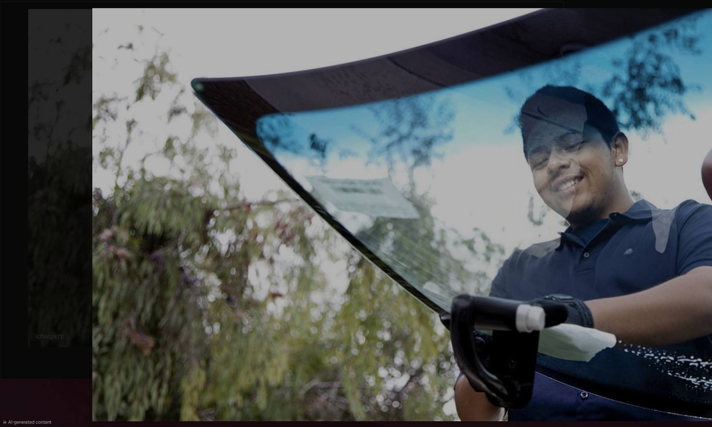

A few plain questions on the phone can save you money, time and a bad install.
Tell us about the damage. We'll get back to you.
Get My Free Quote OnlineFill out a short form and we call you back. Prefer to talk now? Call (509) 581-2623.
The best questions to ask before a windshield replacement are short and simple. Any good shop can answer them in a minute.
Ask for one number that covers the glass, the labor and any extras. Ask if tax, moldings or recalibration are included. Our cost guide shows what moves the price.
If your car has a camera behind the glass, it likely does. The shop should know this from your VIN. Read our guide on ADAS recalibration after a windshield replacement.
Ask if it is OEM or aftermarket. Ask if it matches the features on your car, like a rain sensor, heated area or camera bracket. If your insurer or your car requires a certain type, say so up front. More in our guide on OEM vs aftermarket glass.
The wait depends on the adhesive, the weather and your vehicle. A good installer gives you a time, not a guess. See our safe drive-away time guide.
Mobile service saves a trip. Ask what the spot needs, like a safe place to work and some space around the car. We explain it in our mobile replacement guide.
Ask about workmanship, leaks and wind noise. Ask for it in writing. If a seal leaks or the trim lifts, you want to know who to call.
Many policies cover glass. Some carry a separate glass deductible. Ask if the shop can bill your insurer directly. Our insurance guide helps you compare.
Ask about the earliest slot and what could change it. See same-day windshield replacement for what affects timing.
We serve Kennewick, Richland, Pasco, Prosser and Sunnyside. Call (509) 581-2623 and ask us all eight.
Not sure what your damage needs? Describe it over the phone and we will tell you straight.
☎ (509) 581-2623
Call for a free quote. We'll tell you exactly what it costs and how fast we can get to you. Ask any question you want before you decide.
☎ Call Now — (509) 581-2623